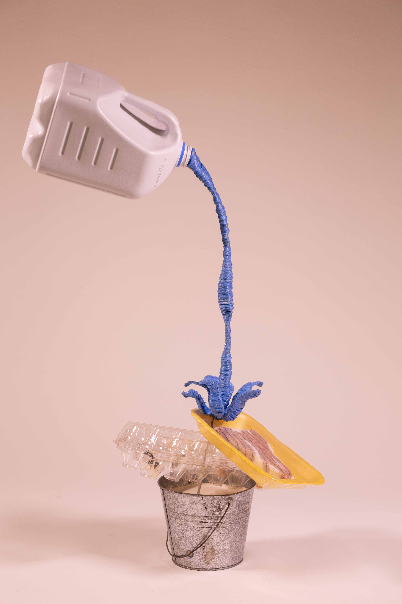
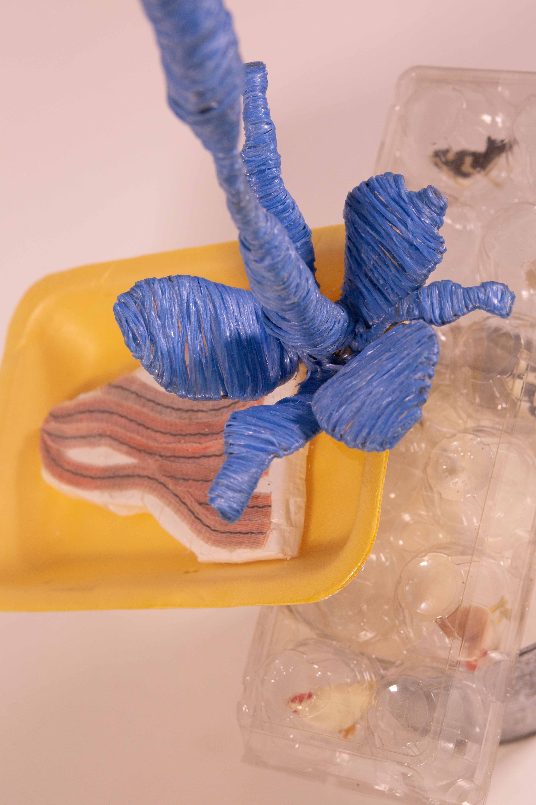
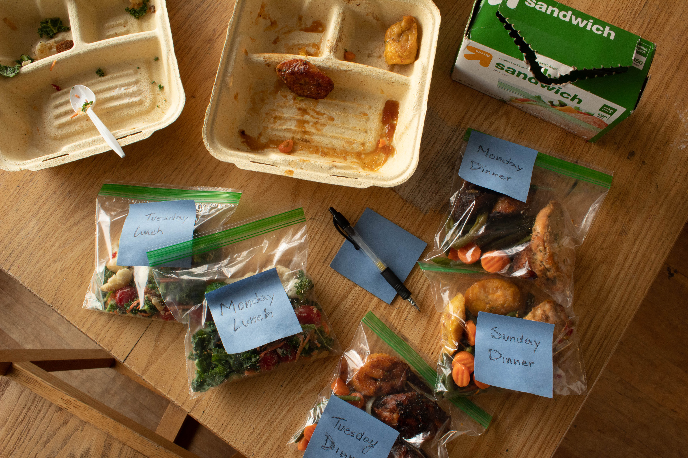
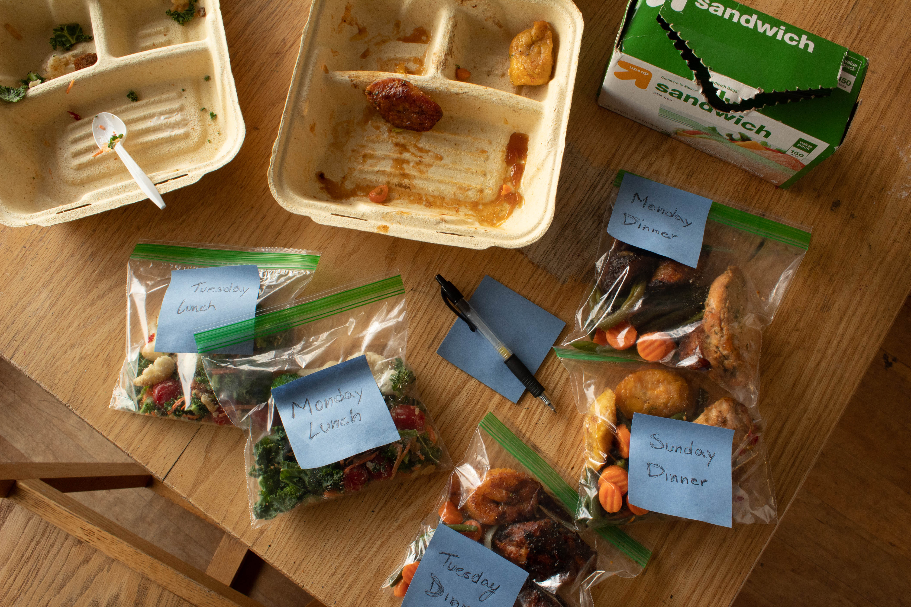
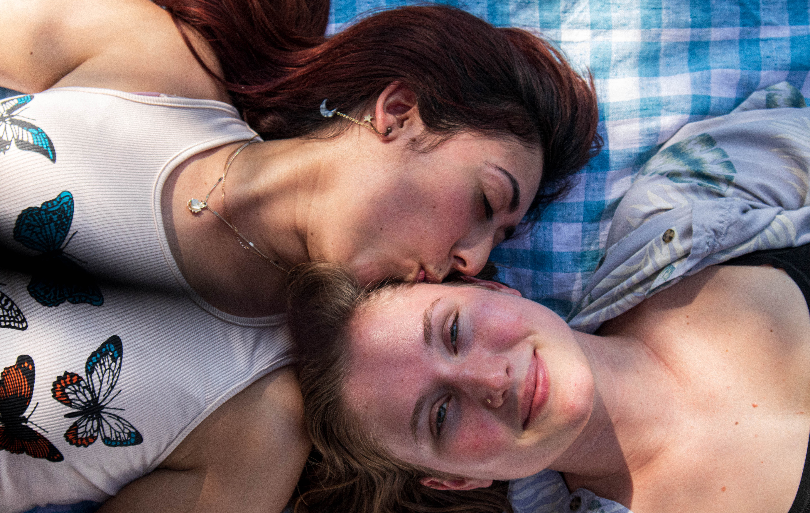
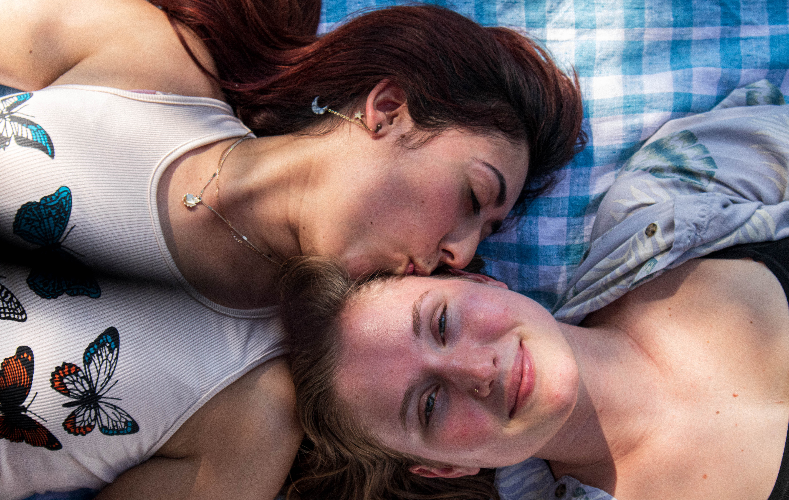
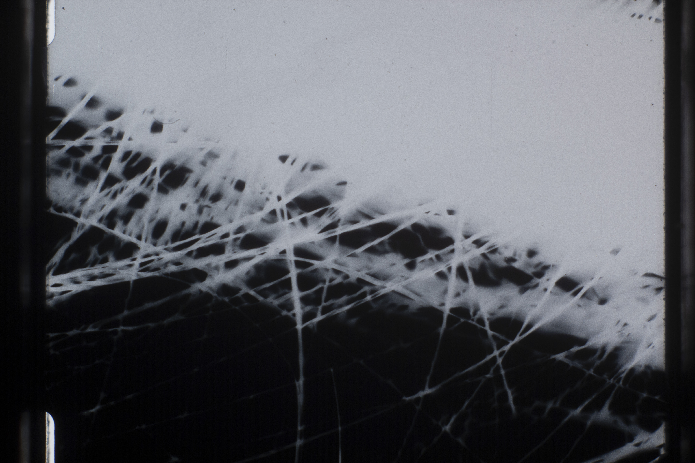
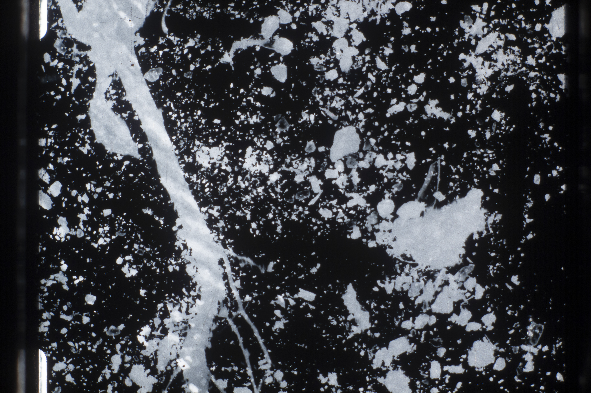

Studio Art Foundations. Smith College (Fall 2021, Spring 2022)
 ↑ Bea Wendling. Sculpture made using recycled materials.
↑ Phoebe Walsh. Wooden chair sculpture and dyed rope.
↑ Chlo Gold. "Homebody". Mirrored aclylic, pink LED light. 11" x 11" x 15". Megan Hart Student's Prize Winner 2022.
↑ Elena Zytnicki. Hanging installation with wooden sculpture and printed images with text. 8' x 4' x 4'
↑ Ciana Socias. Artist book.
↑ Sophie Friend. Mirror, found hand, candy, fake pearls and fake plants.
Photo I. Columbia University (Spring 2021, Summer 2021)


↑ Tiffany Dimm.
↑ Lilly Cao
 

↑ Iliana Cantu. From the project "Low-income students at Columbia".
 

↑ Blossom Maduafokwa
Photo II. Columbia University (Fall 2022)
 ↑ Vivian Vivas


↑ Christine Yoon
↑ Alexis Nadal

↑ Isabella Gregory. "Three generations"